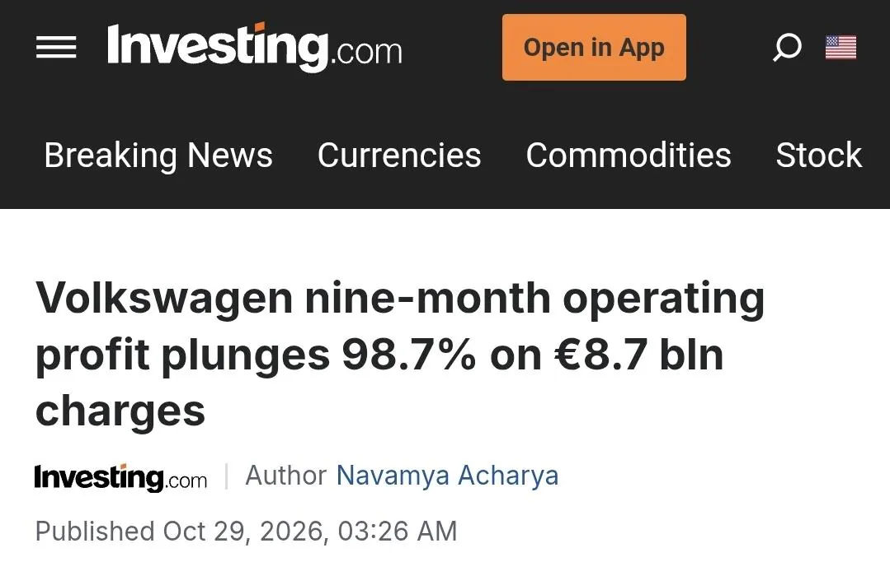

2026년 9개월간 영업이익이
8조에서 7조 9000억 줄어서
전년 대비 98.7% 하락

2026년 9개월간 영업이익이
8조에서 7조 9000억 줄어서
전년 대비 98.7% 하락
디젤사기친거 생각하면 망하는게 맞는 회사긴해
폭스바겐은 자율주행 투자가 대폭망한게 제일 크고
두번째는 포르쉐가 배터리회사 투자했다가 대폭망했고
세번째로는 전기차 전환에 실패해서 중국한테 시장 다 내준게 또 한몫함
중국보다 싸게 팔면 되지 않냐고?
애초에 중국보다 차 많이 찍어 낼 수 있는 나라도 없고, 중국보다 인건비 자재비 후려치면서 차 만들수 있는 나라도 없음
거기다 자국내에서 소화 못하는 덤핑차량 전세계에다 밀어내기로 물량 다 던져버리는데 그걸 일개 기업이 어떻게 대응함ㅋㅋ
유럽도 부랴부랴 보조금으로 장벽쳤지만 이미 늦음
자율주행까지도 아니고 걍 엔포 소프트 밍함. 그래서 리비안꺼 쓰기로 함. 근데 아직 성괴없ㅁ
카리아드 세웠다가 개쳐망해서 2조 날렸잖아
진짜 ㅈ 된거 같은데..
비틀 전기차 나오면 잘 팔릴 거 같은데
비틀 전기차 (6700만원) 이지랄병할듯
마이크로 버스 전기차(id버즈) 1억.
이미 맛을 보았네
폭바 차 ㄹㅇ 너무비쌈
아우디 갖고있다고 폭바 차도 아우디급인줄 암
정작 아우디는 실내 내장재 폭바급으로 다운그레이드하고 가격은 더 쳐올림
그래놓고 왜안팔리는지 고민함
아우디 A8 빼고는 그랜저랑 비교시 딱히 내장품질 더 좋지도 않음
A8은 넘사긴한데 진짜 굳이인 차라 ㅋㅋㅋㅋ
현기 망한다는 새끼들 밖에 처 나가봐서 아무 차나 봐라 ~~ 뭐가 보이냐
나도 창문 열고 볼테니 니들도 처 봐라 .
"어라 ~~ 테슬라네 .. ㅅㅂ ㅡㅡ;;"
.....?
?
이건또뭔템플릿이냐
시발 행님 몇살이세요
40대
아님 최소 50대 무브먼트임
이건 진짜 뭔 템플런이냐..?
20년 전 커뮤감성 제대로 내네
혼자 글로 꽁트하네 ㅋㅋㅋㅋ
이건 40대도 아니고 거의 50대 가까이 되셨을듯
컨셉이지?
아직도 디젤팔고
하브 없고
전기차는 드럼브레이크 쓰고
다 이유가 있지 뭐
폭바 12년째 타고있는데 10년더 탈거임
차는 좋음
현기가 그나마 버티고있는거라는게 놀라울 따름..
멀리갈거 없이 폭바 최근 20년간 성장은 중국에 폭스바겐 차를 겁나 팔아먹으면서 한 성장임.
근데 중국 내수는 지금 거의 중국차로 도배됨. 그리고 역으로 중국차가 유럽시장을 스믈스믈 침범하고 있지.
그러니 예전 체급 유지가 전혀 될 수가 없는 거임.
폭바 내부에서 나오는 이야기는 지금 이번에 한 인력 10% 감축이 끝이 아니라
인력 33%~50% 감축 이야기가 나오고 있음.
독일정부가 이거 못하게 틀어막고 있어서 그렇지.
근데 우리는 비슷한 사례를 봤지...쌍용차 라고... 이꼴 나는거지 결국.
본문만 보면 98.7% 하락이 아니라 전년대비 98.7% 라는 거고 하락은 1.3% 라는거 아님? 뭐 별일 아닌거 같은데 내가 이해를 잘못한거임?
난독증이냐? 평소에 책 좀 읽어라 제발
영익 8조에서 7.9조 줄어서 9000억 정도되면 1.3%하락이냐? ㅋㅋㅋㅋㅋㅋㅋㅋㅋㅋㅋㅋ
아 8조에서 7조9천억이 됐다는게 아니라 7조9천억이 줄었다는거구나 ㅋㅋ 이해함
아예 머릿속에서 이만한 수치는 말이 안된다고 배제했나보네 ㅋㅋㅋㅋ
숫자만 보면 당장 망해도 이상하지 않아서 이해를 못 했음 ㅋㅋ
찾아보니 포르쉐 손상차손 같은 일회성 비용 때문이고 망할 정돈 아닌데 수익성은 진짜 안 좋은 듯
작년에 폭바 살려다가 테슬라 샀는데 천만다행 ㅋㅋ 왠지 좆될거같더라
그돈씨
저게 말이나 되는 수치임???
와... 폭스가.이럴수가... 폭스.전계열은.아니지?
일본에 살고 이번달에 신차 뽑아서 잘타고있음. PHEV 인데 이정도만해도 엄청난데 EV는 얼마나 쩔지 상상도 못하겠음. 근데 독일차는 한국산 EV만도 못하다는거보고 걍 시대가 끝났구나 싶은 생각만 든다. 일본도 HEV 몰빵해서 근근히 유지하는데 뭔 근자감인지.....하여간 중국젖꼭지 맛본 애들 하나둘 다 맛가기 시작하네.
전기차 싫어도 하이브리드는 기본으로 깔고 가야